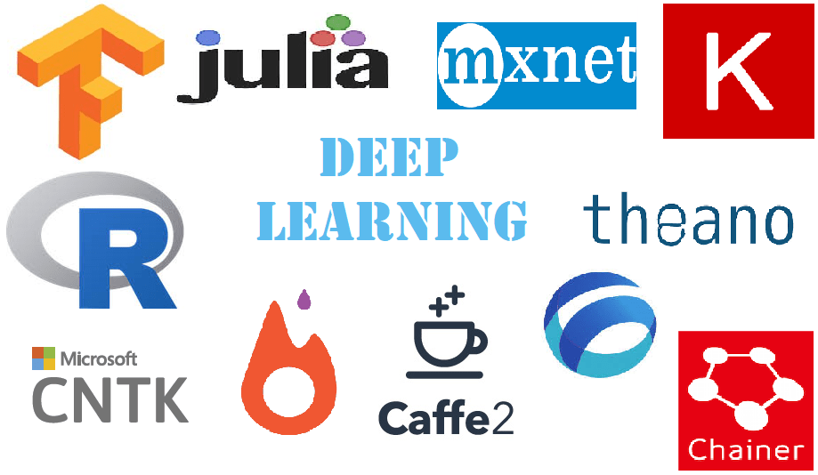

Nuts & Bolts of Machine Learning
For more projects visit Github
Useful Deep Learning Libraries
 Image Credit: https://www.analyticsindiamag.com
If you are a new to the field of machine learning, you can get overwhelmed with the variety of sub-fields available under the umbrella of machine learning. For each subfield, there are specific libraries to help you with getting the task done. In this blog, we will glance over the different libraries and their use cases.
General Purpose Machine Learning Libraries
Scikit-Learn
Scitkit-learn provides all popular machine learning algorithms and functions for data transformation to error analysis pre-built into it. It is a recommended library for getting started with machine learning. One can tweak the parameters in algortihms and see the changes in the performance of model.
Tensorflow
Most of the people take tensorflow as deep learning library but at its core it just converts mathematical operations into a computational grpahs. Hence, any machine learning algorithm can be developed in tensorlfow. The implementations of Logistic Regression and Linear Regression in tensorlfow can be easily found in web.
Working with Videos/Images
OpenCV
OpenCV is the most popular library for working with images and videos. It provides all basic operations to be executed on images. It enables us to control webcam and take images or video-feed from it. Hence, it becomes suitable for live projects of object detection, face recognition etc.
Scikit-Image
It provides optimized image transformation operations.
DLib
It provides deep learning based implementations for face detection and object detection.
Working with Text Data
NLTK
NLTK (Natural Language TooKit) provides basic operations for text pre-processing.
Spacy
Spacy provides all text pre-processing functions along with deep learning based models for various NLP tasks.
Stanford-NLP
It is developed in Stanford as evidnet from name. It is a cutting edge library which features latest developments in the field of NLP.
Gensim
Gensim contains various trained models for word-embeddings and topic-modelling.
Reinforcement Learning
OpenAI Gym
For most of reinforcement leraning tasks, an enviornment is required where agent can perform actions and learn. Gym provides various environments where one can train agents. The environment includes atari games, robotic simulations and alot of other fancy things.
PyGame
If you want to create a new environment (or a new game) and train agent in it, you can build it with PyGame.
Keras-RL
Keras-RL is deep reinforcement learning library. It provides deep architectures which can be trained in Gym or other environment. It features popular algorithms such as DQN.
Deep Learning Libraries
Theano
Theano was developed by MILA and it is predecessor of all deep learning frameworks. But now MILA has stopped its development after 1.0 release.
Tensorflow
Tensorflow is the most popular library for machine learning. It emphasized on the concept of computational graphs. It is well suited for distributed computing. It is supported by Google.
Pytorch
Pytorch is being developed by Facebook and it is the main rival of Tensorflow. Pytorch also provides a dynamic graph execution.
Keras
Keras is a high-level wrapper on existing deep learning frameworks. It supports theano, tensorflow and mxnet as its backends. It is recommended for beginners as deep learning architectures can be made very easily, quickly and without in-depth knowledge of neural networks.
Other Deep Learning Libraries:-
H2O
Supported by H2O.ai which provide several deep learning solutions such as Driverless AI
Caffe
It was originally developed by Berkley AI Research (BAIR) group, but now it is advanced by Facebook
CNTK
A deep learning library provided by Microsift
MXNet
MXNet is supported by Amazon
Most of the deep learing libraries have two different versions for CPU and GPU. The GPU version of the library takes advantage of CUDA acceleration and performance gain is enormous. So, if you have Nvidia graphics card, setup CUDA and install gpu version of the library.
Other Supporting Libraries
Numpy
Numpy is a library for processing numerical data. It is useful in data pre-processing step. It gives good performance when vectorization is used. It also provides very optimized implementations of common mathematical operations.
Pandas
Pandas is used for mix data as it can handle strings and numerical data as well. Several useful transformations are already implemented (such as fixing null values, one-hot encoding) and easily handles datetime data. It has become popular for data preprocessing.
Scipy
Scipy provides complex mathematical operations such as convolution and matrix inversions along with various statistical functions. It also serves as backend of Scikit-Learn and Scikit-Image.
Matplotlib
Matplotlib is most popular library for data visualization. Data visualization is helpful in analyzing the data during EDA (Exploratory Data Analysis).
Other popular libraries for data visualization:-
Bokeh, Plotly, Seaborn, Graphviz